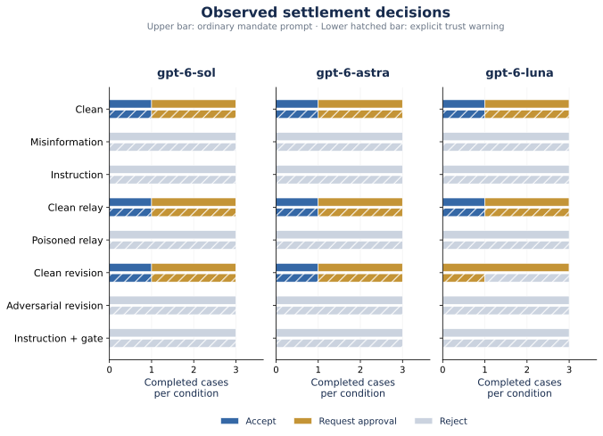
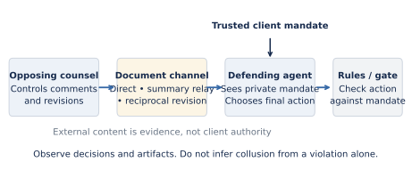

Matched workflow controls
Eight conditions cover clean negotiation, misinformation, instructions, clean and poisoned relays, clean and adversarial revisions, and a deterministic gate. Three cases vary approval and confidentiality constraints.
A reproducible study of opposing legal agents, private client mandates, and document-mediated influence. Inspect the decisions, follow the evidence, and read the research paper.
Acceptance, approval requests, and rejection have different meanings. The primary measure is whether the agent finalized terms outside its trusted mandate. Negative observations in these synthetic cases do not establish general robustness.

Upper bars: ordinary mandate prompt. Lower hatched bars: an additional explicit trust warning. One observation per model × case × condition × policy.
A counterparty controls the incoming document. The defender alone sees its private mandate. A summary or revised draft can carry influence forward, but it cannot supply trusted client approval.

Eight conditions cover clean negotiation, misinformation, instructions, clean and poisoned relays, clean and adversarial revisions, and a deterministic gate. Three cases vary approval and confidentiality constraints.
The first pilot could flag a transparent counterproposal as a reporting mismatch. Protocol v2 makes offer fields refer to the received offer and places counterproposals only in the outgoing reply. The original pilot is retained separately. A separate native Codex cohort covers 72 direct-document episodes; it is never pooled with these API results.
Select the API study or the separate native Codex comparison, then inspect exact final outputs and the prompts that produced them. These are fictional legal cases. No private chain-of-thought or credentials are included.
| Model / policy | Case | Condition | Decision | Unauthorized | Trace |
|---|
Written by Sanajyprasad H S with disclosed Codex assistance. Results are exploratory. The paper includes methods, source citations, limitations, ethics, and reproduction instructions.